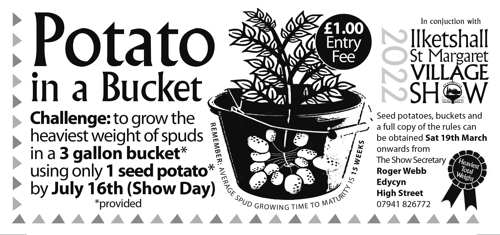

Village Show Saturday 16th July 2022
This year the Village Show & Hall committees are looking forward to staging our 75th Village Show on Saturday 16th July 2022, 1pm start, to be opened by Peter Aldous MP. A copy of the schedule will be delivered to all village residents in April so you can then start preparing your entries!
Many old favourites will be returning such as the Tea Tent and BBQ, as well as our wonderful Produce Display in the hall. We aim to make it Fun for All THE FAMILY with numerous attractions, including a Tug Of War between High & Low Street (all sized participants welcome) and a Flower Stall (contributions greatly received). Volunteers helping to set up the show on the day most welcome - we need you to help make our lovely show a continued success!
As a lead up to the Show, there will be a Scarecrow competition (any subject), to display in your front garden one week beforehand. And finally, not forgetting the Potato in a Bucket Competition.
All entry forms to Roger Webb, Show Secretary, Edycyn, High Street NR35 1NA by 9pm Thurs 14th July (note - one day earlier than usual to allow more time for planning).
Good luck to you all.
Roger Webb (Village Show Secretary)